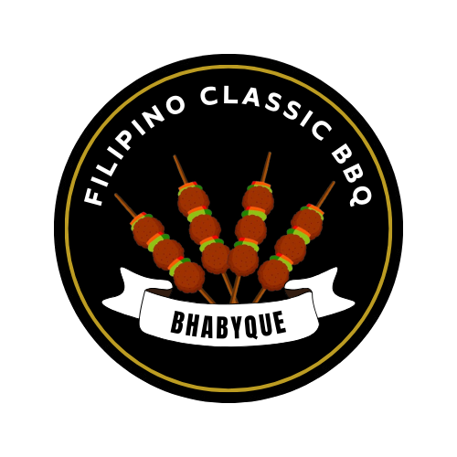
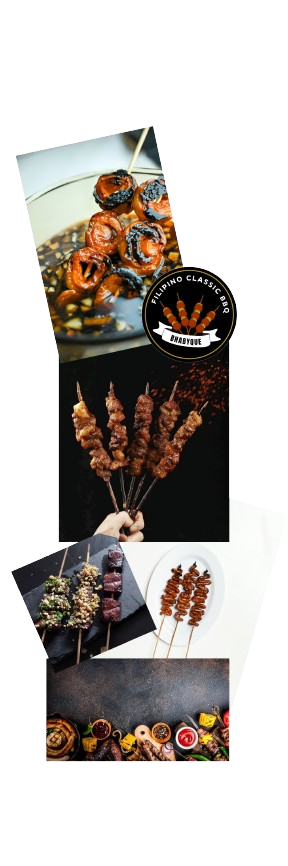

HOME
ABOUT
MENU
CONTACTS
About Us
Bhabyque

"BhabyQue" is a culinary gem located in a picturesque town with bustling streets and the aroma of sizzling meats wafting through the air. It is a refuge for barbecue fans with a fascinating history that is intertwined with the life story of Lydia Ciriaco, the founder.
Lydia's adventure into the world of barbecue started well in advance of the establishment of BhabyQue in 2023. Lydia had experimented with flavors and cooking ways in her backyard even in her younger years. Her actual love, however, was put on hold for a while as she gave her all to the demands of job and daily life. Only years later, after years of experience and skill-building, did Lydia decide to go full steam ahead as an entrepreneur.
Based on her own moniker, "Ate Bhaby," which friends and family gave her, Lydia called her business "BhabyQue," adding a unique touch that would appeal to customers from all over. BhabyQue gained rapid recognition for its cozy, family-friendly atmosphere in addition to its delicious BBQ menu. Every part of the company was infused with Lydia's love and devotion, which meant that every dish reflected her enthusiasm and commitment.
BhabyQue's menu offers a delectable selection of barbecue dishes, such as tender chicken skewers with just the right amount of seasoning or delicious ribs coated in a smokey barbecue sauce. With a menu tailored to the varied tastes of her customers, Lydia combined classic and creative recipes.
However, BhabyQue is a center of friendship and community rather than just a spot to taste delicious barbecue. With endless special moments shared over platters of delicious barbecue, BhabyQue has hosted everything from energetic get-togethers with friends and family to romantic evenings for two. Even with the pressures of managing an established company, Lydia never wavers in her dedication to her family and what she does.
Lydia represents the essence of BhabyQue: a blend of enthusiasm, commitment, and the uncomplicated pleasures of delicious cuisine shared with those we care about. She strikes a balance between her business pursuits and spending time with her loved ones.